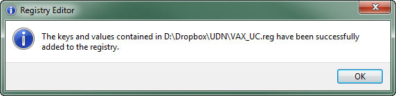

UDN
Search public documentation:
UsingVAXWithUnrealScriptCH
English Translation
日本語訳
한국어
Interested in the Unreal Engine?
Visit the Unreal Technology site.
Looking for jobs and company info?
Check out the Epic games site.
Questions about support via UDN?
Contact the UDN Staff
日本語訳
한국어
Interested in the Unreal Engine?
Visit the Unreal Technology site.
Looking for jobs and company info?
Check out the Epic games site.
Questions about support via UDN?
Contact the UDN Staff
通过虚幻脚本使用Visual Assist X
概述
Visual Assist X 使用Visual Studio提供重构、增强的intellisense和其他为程序员所设的工作流程改善。 现在可以对Visual AssistX进行修改，使非官方和不予支持的虚幻脚本增强功能在Visual Studio中可以使用。
版本和安装
- 在Tool(工具)菜单中，选择 Option(选项) 查看Visual Studio选项的对话框。

- 展开 Text Editor(文本编辑器) 部分并选中 File Extension(文件扩展名) 。 在这里您可以添加一个新的文件扩展名处理器。

- 在 Extension(扩展名) 域中加入 uc 并选中 Microsoft Visual C++ 作为 Editor(编辑器) 。 然后点击https://udn.epicgames.com/pub/Three/UsingVAXWithUnrealScriptCH/add_button.jpg 按钮为
uc扩展名添加处理器。

- 重复
uci文件扩展名的最后一个步骤。 - 点击
 图标保存修改。
图标保存修改。
启用虚幻脚本支持
- 复制以下文本并用
.reg文件扩展名将它保存在一个文本文件中。- Visual Studio 2010
Windows Registry Editor Version 5.00 [HKEY_CURRENT_USER\Software\Whole Tomato\Visual Assist X\VANet10] "EnableUC"=hex:01
- Visual Studio 2008
Windows Registry Editor Version 5.00 [HKEY_CURRENT_USER\Software\Whole Tomato\Visual Assist X\VANet9] "EnableUC"=hex:01
- Visual Studio 2010
- 双击运行新的注册表文件，或者通过选择 Merge 双击关联菜单。
- UAC会询问您是否要运行这个文件。 如果提醒，则点击 按钮。
- 随后会出现一个警告窗口提示您，您将修改这个注册表。 点击 按钮继续。

- 如果修改成功，系统会更新注册表，您也会看到以下信息：

设置虚幻脚本片段
- 复制
C:\Users\to\AppData\Roaming\VisualAssist\Autotext\cpp.tpl C:\Users\.。\AppData\Roaming\VisualAssist\Autotext.tpl - 一旦创建了
uc.tpl文件，虚幻脚本会在VA片段编辑器中以节点的形式出现。 - 从C++节点、C++片段和虚幻脚本节点中移除虚幻脚本片段。